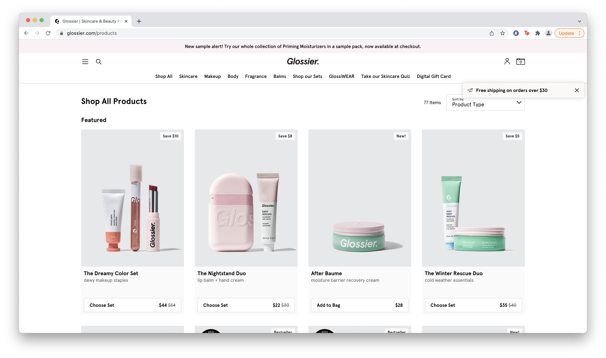
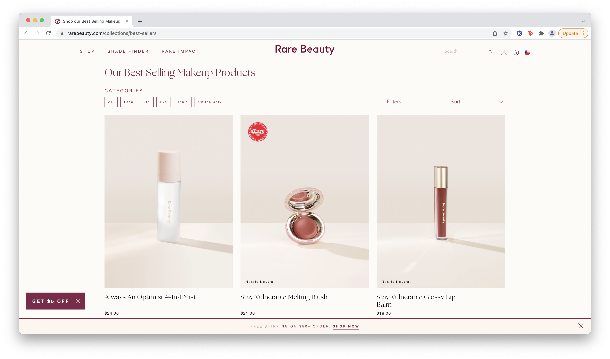
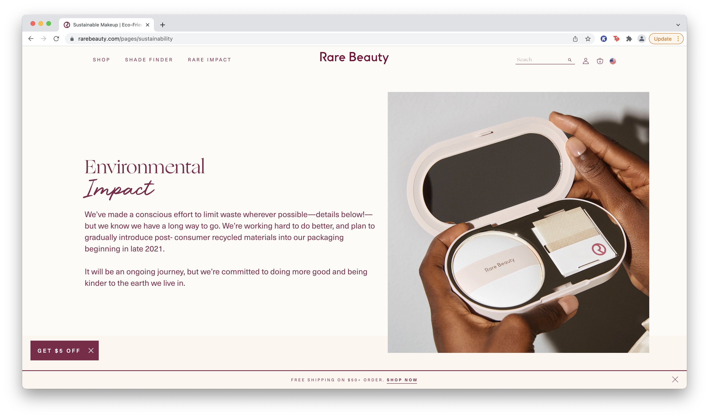
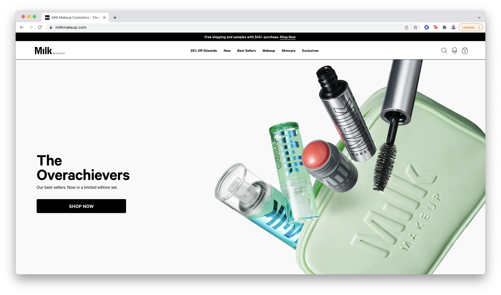
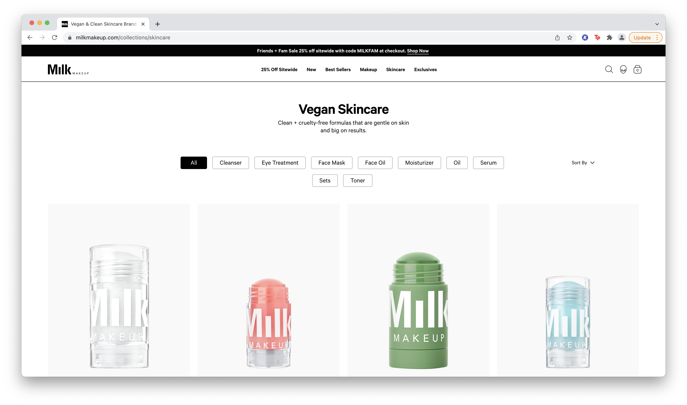

Final Project Proposal
Introduction
Juicy Co.
Juicy Co. is a beauty brand dedicated to providing customers with skincare, makeup, body care, and fragrance products that are made with natural ingredients and environmentally friendly packaging.
Target audience
The target audience of this company is young people interested in clean and natural beauty products that both enhance their physical appearance but are also interested in sustainability because of this brand’s focus on use of natural ingredients and environmentally conscious packaging.
Their primary goal when shopping here is to receive products that are both high quality and aesthetic in appearance, but also have environmental impact in mind. The products themselves will be advertised to be made with clean and natural ingredients so customers can trust they are not putting anything toxic or chemical on their skin, but they can also feel confident about using products that can be recycled or reused so their waste won’t negatively affect the environment.
Comparative analysis
Glossier

Rare Beauty
 Milk Makeup
 Website content
Home
Saving your skin and the world. Welcome to your safe space. This makeup is made to feel good in, and we only put what is good in. All made with clean and natural ingredients, our formulas are 100% vegan, cruelty-free, and paraben-free. Our unique packaging is also environmentally friendly and recyclable, but since we know you’ll be back for more, we made them reusable too.
[Makeup products arranged on a counter.]
About Us
Hi, welcome to Juicy Co! We make products from skincare, makeup, bodycare, and fragrance designed to be displayed and enjoyed, but also with the health of your skin and the world in mind. It’s nice to meet you! Now that you’re here, take a look around. Meet our products, see them in action, and let us know what you think.
[Makeup samples and swatches laid out on a table.]
Location
Come visit us! We are located at 1440 Peach St, San Luis Obispo, California 93405. See you soon!
[Store interior.]
Shop
- Skincare
- Moisturizer
- Cleanser
- Primer
- Cleanser
- Makeup remover
- Sunscreen
- Facemask
- Lip balm
- Makeup
- Blush
- Skin tint
- Concealer
- Brow pomade
- Lip gloss
- Lip stick
- Mascara
- Eyeliner
- Eyeshadow
- Bronzer
- Highlighter
[Product display.]